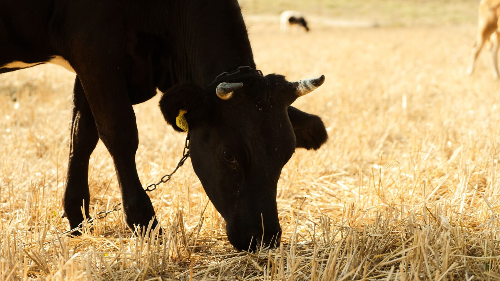
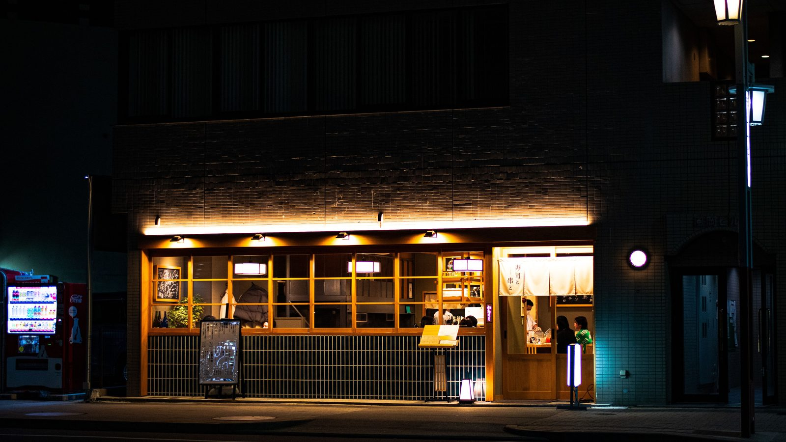

営業中
焼肉 福朗北島本店
- 住所
- 徳島県板野郡北島町高房字東中道32-7
- 営業時間
- 17:00 – 22:00（L.O. 21:30）
- 定休日
- 月曜日
- 設備
- 駐車場あり ／ 全席禁煙
- ご予約
- お電話・Instagram DM・食べログ
- @fukurou_yakiniku296
徳島県産黒毛和牛

和食をはじめとする飲食産業は、
世界に誇るべき日本の文化です。
この仕事に誇りを持ち、
若い世代が「飲食業で働きたい」と
思える未来をつくりたい。


醤油とニンニクをベースにした、
他では味わえない甘辛い味。
その味に惚れ込み、修行を願い出ました。
受け継いだこのタレを、
いま福朗で使わせていただいています。
厳選された希少な
徳島産の食材を使用しています。
Our Commitment

Wagyu Beef

徳島の水と空気、無添加飼料で約32ヶ月。
愛情深く育てられたブランド牛です。
甘い香りと、絹のようになめらかな口溶け。
胃もたれしにくい脂が特徴です。
ここまで厳選された阿波華牛を楽しめるのは、当店だけです。
The Secret

01
肉の北海様の社長が、長年の経験と確かな目利きで厳選した阿波華牛。その中からさらに選び抜いたものだけを仕入れています。
02
和牛の産地として知られる九州などから、花補佐さん自らが良血統の子牛を厳選。「満天白清」は農林水産大臣賞を受賞しています。

03
多くの農家が早出出荷を選ぶ中、花補佐牧場では約32ヶ月かけてじっくりと。価格に直結しないこだわりで、肉の旨味を深めています。

04
この最高品質のお肉を、修行先から受け継いだ濃厚な特製ダレと豊富なお酒とともに、レトロな空間でお楽しみください。
Our Space
カウンター8席とテーブル席14席、あわせて22席。
おひとりでも、少人数のお集まりにも。
焼き台を囲む距離の近さが、この店の心地よさです。
Shops
営業中

2026年9月上旬オープン予定
最新情報は Instagram にてお知らせいたします。
Reservation
その日いちばんの一枚を、あなたのために。
ご予約・空席のお問い合わせはお気軽にどうぞ。
Contact
3営業日以内にご返信いたします。
お急ぎの場合はお電話ください。